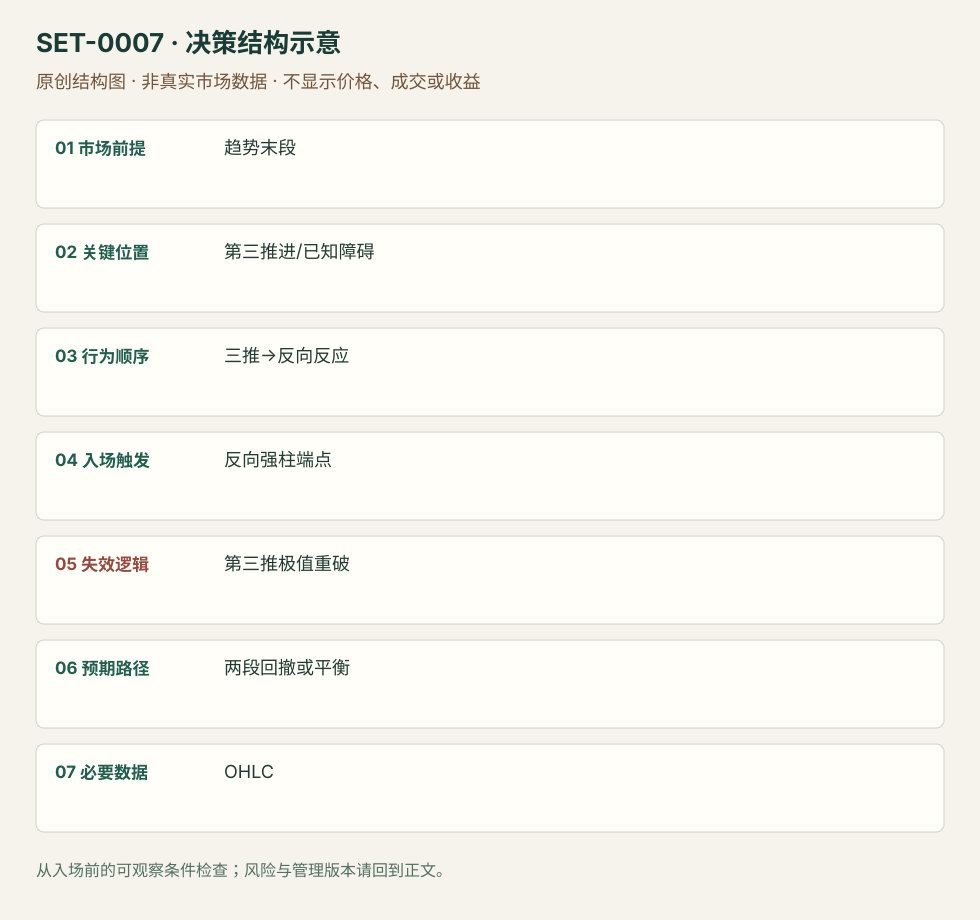

三推高潮后的反转
Three-Push Wedge Climax Reversal · SET-0007 · reviewed · v1.0.0
盈利证据：not_established。审查范围与来源版本见第13节；未知字段保留缺失原因。
1. 名称与快速概览
方向走势连续三次推进至极值或已知障碍，第三次后出现反向信号，考虑两段回撤或转为平衡。新一轮同向强突破会否定本次高潮反转。
记录口径：PA core；必要数据 OHLC。名称性质：编辑性描述名，英文保留来源术语以便检索。reviewed 只表示本条规则与证据记录审查通过，盈利状态为 not_established。
2. 本质与行为假说
观察三次有间隔的推进与跟随强度；“耗尽”是解释。Brooks楔形不要求教科书收敛，但不能把强微通道中的每根柱当一推。
3. 适用市场与环境
方向推进后段或支撑阻力附近；紧通道更可能先只有小反转。入场前用推进间的反向摆动识别三推，不事后找三个方便的高点。
来源实用市场：ES日内（Brooks讲义）。
Session：美股/ES现金参考段 09:30–16:00 America/New_York；收盘前平仓。期货夜盘单独建背景，不将其并入开盘区间。
跨市场：本版不主张已经验证的跨市场迁移；更换市场必须重定数据来源、流动性与session。
4. 出现前的观察清单
必要：三次可区分的摆动与第三次后的反向反应。增强：尾部增长、实体减弱、已知阻力。否决：仍是首次强突破、没有反向信号或第三推太强而未经复测。
5. 形成过程与状态转换
第一推→回撤→第二推→回撤→第三推→反向柱/微双顶底→触发。第三推还在强推进时不猜极值。
6. Entry trigger 与执行方式
Brooks版空头在靠近低点收盘的空头柱下方触发；强最后一推后可等微双顶底再进。只看到三推不构成订单。
7. Invalidation 与止损逻辑
整个反转极值之外表达失效；重新强势穿越第三推而延伸时反转假说失败。扩大成更大楔形属于新机会，不能用无限放宽止损保留原单。
8. Exit、target 与 trade management
作者常期待至少两段反向运动；在当时已知旧摆动、均线或平衡区管理。强原趋势下先以小回撤假说处理，不保证回到当日另端。
9. 常见 variations
普通/抛物线楔形作为强度版本合并；三推顺趋势回撤归两段/复杂回撤家族，不把相同交易重复计为wedge flag。
10. 失败方式与不交易条件
正常亏损：明确三推反转后原趋势再次恢复。未成立：把连续六柱单向微通道分成三推。来源讲义页36有高潮后继续跌的反例；赔率数字未获样本支持。
11. 与相近 setups 的区别
12. 图表与案例解读
已查看Wedge Top: Reversal Day图，第三推处微双顶与空头信号，后续红色区块展示两段下跌。原图省略坐标日期；PDF页36作为待进一步逐页复核的失败线索，不将未看页写成已核对画面。
- [VIS-000007] Wedge Top - Reversal day；定位：Wedges章节第1幅，Wedge Top: Reversal Day。先看三次推进与反向柱，再看两个标注下跌段；后者是事后展开。 验证：chart_viewed。

本地原创示意（VIS-000064，非真实市场数据）：

小屏阅读可打开原尺寸示意图并缩放。

此图用于对照识别顺序与风险定义；不计入真实案例覆盖率。
视觉材料元数据与查看范围
- VIS-000007 · real_source_chart / structure_and_trigger / chart_viewed
品种：未知/不适用；日期：未知/不适用；周期：未知/不适用；时区：未知/不适用
品种未在图中核对；日期未在图中核对；周期未在图中核对；时区未在图中核对；来源图表不是成交审计 - VIS-000064 · synthetic_structure_diagram / illustration_only / generated_not_market_evidence
品种：未知/不适用；日期：未知/不适用；周期：未知/不适用；时区：未知/不适用
无真实品种、日期或价格：这是结构示意
13. 证据、分歧与未知项
Brooks单一来源族；规则清楚，几何与bar count仍需经验。三推与微通道不是可随意互换的标签。无本库回测或独立盈利证明。
- [EVD-000010] Al Brooks，《10 best price action trading patterns》，SRC-0016；定位：Wedges: three pushes up or down。支持：三次分开的推进与反向信号；几何可不收敛
- [EVD-000011] Al Brooks，《Patterns on the Open》，SRC-0001；定位：PDF页25–27及36。支持：卖出高潮可等微双底；强原趋势第一反转可能很小且楔形会失败
审查边界：来源份数与独立核心核验分开；当前类别为 limited_single_family。正文中的概念、官方事实、衍生解说或同族资料只按其支持范围使用。
14. 可用于复盘的检查表
- ☐ 下单前的前提可核对：趋势末段
- ☐ 事前标记位置：第三推进/已知障碍
- ☐ 行为按顺序出现：三推→反向反应
- ☐ 实际触发符合选定版本：反向强柱端点
- ☐ 事先写明本次否定条件：第三推极值重破
- ☐ 目标/路径只用当时已知信息：两段回撤或平衡
- ☐ 数据满足 OHLC；记录时间、点差、滑点、队列和未成交
- ☐ 记录截止平仓及规则偏离；正常亏损不事后改成“未成立”
15. 后续验证问题
如何在不看未来时稳定区分一推和多推？比较强末推等复测与首次反向柱，含楔形扩大后的原单亏损。
双向相关导航
- SET-0001 前一交易区间突破失败后的开盘反转 楔形反转必须出现分开的三次高潮推进；本条不要求三推。
- SET-0008 旧趋势破坏后再测极值的主要反转 MTR必须先破旧趋势结构再重测；本条可以在第一轮高潮末端触发。
- SET-0011 趋势末端最后旗形突破失败 Final flag必须先有晚段横向旗形及其突破失败；本条不要求旗形。
- SET-0012 连续推进后的分数回撤反向短交易 楔形需三个分开的摆动推进，本条是连续柱的一次推进。
- SET-0044 价格破位而累计 Delta 背离的反转 0007 价格三推就可构成，本条楔形仅触发层，累计背离不可删除。